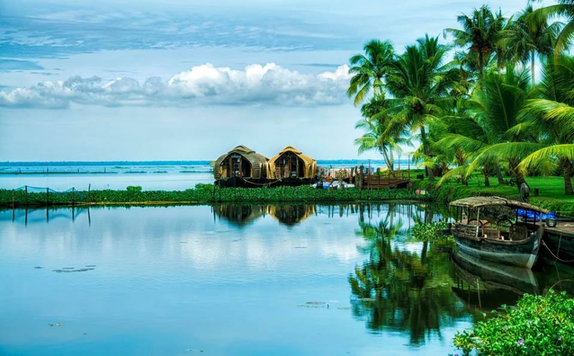

Malayalam is the language spoken in the state and is the official language, while English is the additional official language.
The act of cooking a meal is called Pachakam in Malayalam. Coconut is the main food item used in cooking. It is either chopped, grated, and used as garnishing, coconut milk or paste is used to thicken gravies. While coconut oil is used for cooking.
Kerala is the “land of spices” hence you can’t think of food without spices. The main spices used in Kerala cuisine are black pepper, cardamom, clove, ginger, and cinnamon.
Kerala has popular breakfast dishes like idli, dosa, appam, idiyappam, puttu, and pathiri. Rice and fish along with some vegetables are the staple diet in most Kerala households. Rice produced here has a unique shape and has more health benefits. rice is the main starch ingredient used in food.
A typical meal in Kerala is a curry, a bhaji, curd, papad and pickle accompanied with rice. Sadhya is a traditional Kerala dish which is an elaborate banquet prepared for festivals and ceremonies.
Popular Veg-food is Ariyal, Olan while non-veg food is shrimp coconut curry, fish poriyal. Seafood is popular and consumed with every meal “Karimeen” or fried fish is a popular dish and fish curry is called “Fish Moilee“.
Dessert includes unniappam, a list of payasams and pradhamans, and halwa. Among the beverage they have palm toddy (Kallu), chaaya (tea), nannari sharbath and herb waters chukku vellam, karingali vellam, etc. Keralites have a special etiquette the food is eaten with bare hands, where your palm acts like the spoon where you make a small morsel of the food and slid it by your thumb into your mouth.
Keralites believe in simple living that is reflected through their dress. The costume they prefer is mainly white and off white color.
The traditional dress of Kerala is called Mundu which is a white cotton sari and is famous both among men and women on special occasions. It is worn from the waist to the foot and resembles a long skirt or dhoti where upper garment varies with gender.
Mundu for men resembles a short skirt while Melmundu is the upper garment and all males love to wear shirts and Mundu on a regular basis.
For women, it is called Mundum-Neriyathum which is a set of two Mundus. A lower garment similar to that worn by men, while the upper mundu is worn with a blouse, it is wrapped once around the waist and upper body and left hanging from the left shoulder and resembles a saree.
Women also wear Kerala saree on special occasions like Onam, Vishu, or weddings. Kerala women often choose jasmine flower garlands.
These days western culture had influenced the way people get dressed, more jeans, shirts, skirts, and dresses are preferred. But people of Kerala love their culture and they prefer to wear their traditional attires especially during special occasions.
Due to the moist humid climate of Kerala and abundance of medicinal plants and herbs Kerala is a paradise of Ayurveda. You can enjoy your vacation in this beautiful scenic spot plus you can rejuvenate your body with Ayurveda. Many Ayurveda resorts of Kerala are located on the outskirts of the city which lure tourists into its peaceful and quiet edifices. Kerala is the hub of Ayurveda treatment people from all over the world come to Kerala in search of rejuvenation or to find a cure for their ailment.
Kerala has hill station, tea gardens, backwaters, Ayurveda therapies, beaches, island, forest, bird sanctuary, historical monuments, and much more because of which it is one of the hottest tourist destinations in India.
If you are into nature and wildlife then you will enjoy being in the presence of unique species of birds and wildlife on their natural habitat. Kerala is well known for its beaches, backwaters in Alappuzha and Kollam, mountain ranges and wildlife sanctuaries.
Other popular attractions in the state include the beaches at Kovalam, Kappad, Cherai and Varkala; backwater tourism and lake resorts around Ashtamudi Lake, Kollam; hill stations and resorts at Munnar, Wayanad, Nelliampathi, Vagamon, and Ponmudi; and national parks and wildlife sanctuaries at Periyar, Parambikulam, and Eravikulam National Park.
The “backwaters” region—an extensive network of interlocking rivers, lakes, and canals that center on Ashtamudi Lake, Kollam, also see heavy tourist traffic. Heritage sites, such as the Padmanabhapuram Palace, Hill Palace, and Mattancherry Palace, are also visited. The city of Trivandrum ranks first in the total number of international and domestic tourists in Kerala.
Some of the best places to visit in Kerala are.
Alleppey – famous for its backwater hot spot. Munnar – Perfect for a romantic honeymoon. Kumarakom – One of the most tranquil places to visit in Kerala. Wayanad – The land of heavenly trails Thekkady – For the love of wildlife. Major cities of Kerala are Kochi – A Port city and the commercial capital of Kerala. Major industries in Kochi include oil refineries, shipbuilding, IT, tourism, and the services sector. Trivandrum – The political capital of Kerala and the IT hub of Kerala. Home to national science and technology institutions. Key industry sectors include IT, ITES, education, and tourism Calicut – The 3rd largest city of Kerala by population, Calicut is called the “City of Spices”. Key industry sectors include education and healthcare services. Hinduism and Islam are the two major religions of Kerala. More than 50% of people in Kerala follow Hinduism, and more than 25% follow Islam. Around 20% are Christians, and others follow Buddhism, Jainism, Judaism and other religions. The cultural diversity of Kerala is well known.